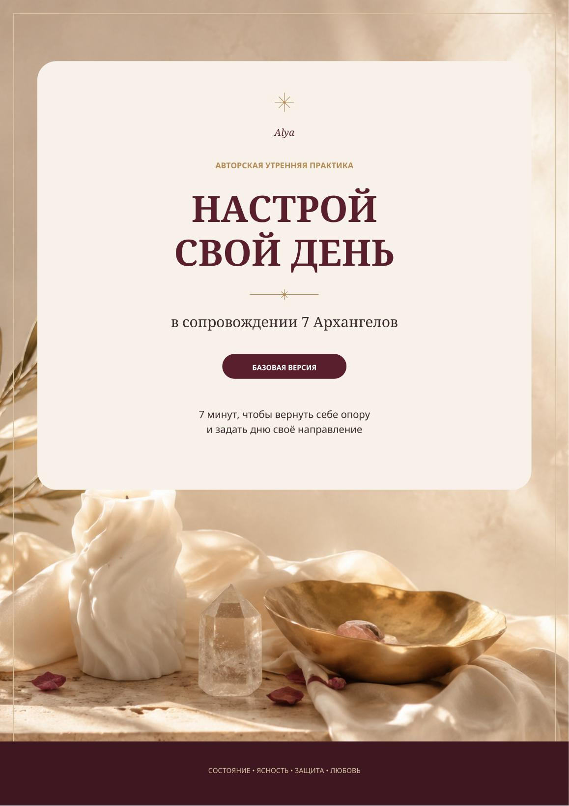
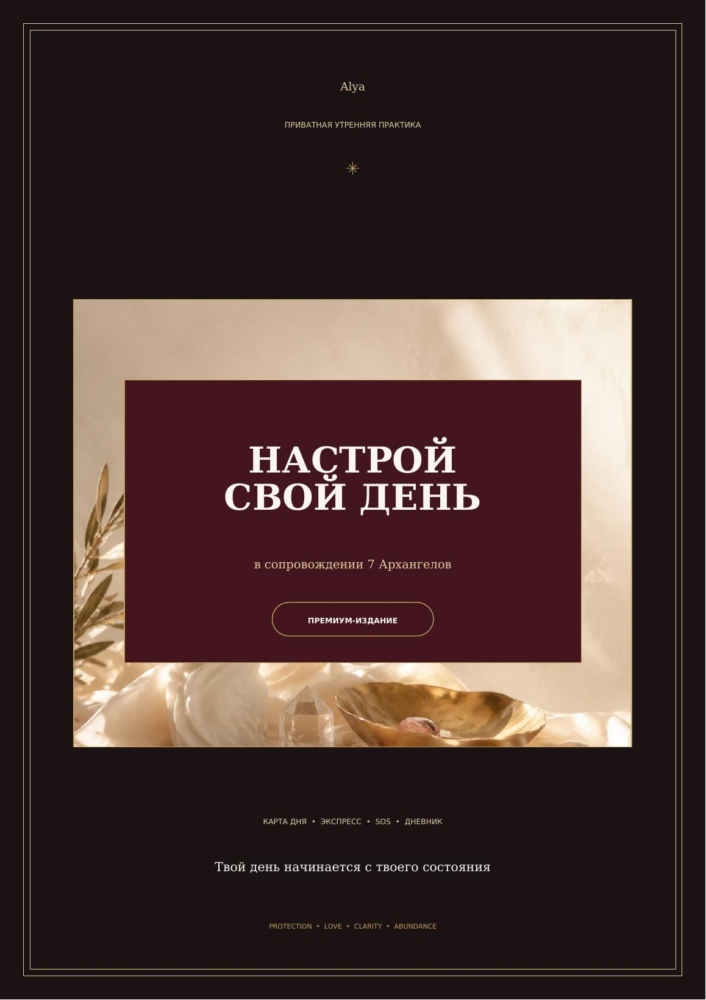

Выбор формата
К форматамНастрой свой день
Выбери формат, который останется рядом
Оба дают цельную систему настройки. Разница — в том, хочешь ли ты обращаться к ней самостоятельно или получать личное послание каждый день.


01BASIC
Цельная основа
990 ₽
Чтобы самостоятельно выбирать и собирать нужное состояние.
- 7 Архангелов и 7 направлений поддержки
- Обращения, практики и личные коды
- Экспресс-настройки и якоря на день
- Дневник знаков и поддержки
Самый живой формат
02PREMIUM
Гайд + Живая колода
1 590 ₽
Чтобы система каждый день открывалась по-новому — именно под сегодняшний запрос.
- Весь гайд BASIC
- Закрытый доступ к Живой колоде
- Личный код и послание дня
- Уточняющая карта по запросу
- Карта-якорь на экране телефона
Не знаешь заранее, какая карта откроется именно тебе.
Только в PREMIUM
Прикоснись — и открой своё послание дня
Одна карта в сутки, личный код и возможность задать уточняющий вопрос, если хочется увидеть глубже.
Сохрани карту на экран телефона — как красивый личный якорь, который весь день возвращает к тому, что важно сейчас.
Как ты хочешь взаимодействовать с этой системой?
Настроить свой деньBASIC — самостоятельно · PREMIUM — вместе с Живой колодой